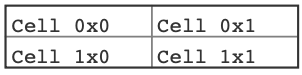
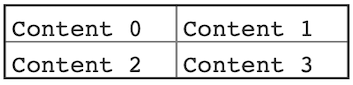

In this section we will introduce you to the basic usage of the hpdftbl library. We will start simple and work us all the way to complex tables and exaplin what is happening as we go along.
We will not assume any knowledge of the table library but we will assume that you are familiar with the plain Haru PDF library.
Creating a PDF page infrastructure
Before we start creating a table we need to setup a plain PDF page with the core HPDF library. The HPDF library has excellent documentation on how to do this and we will use the same simple setup for all our examples. We will create a document in A4 size that have one page. For this we use a few utility functions and our main() will always have the following structure:
In the Appendix you can find the full code for the setup and troke function. They are very basic and follows the standard hpdf library methoddology. The setup_hpdf() creates a new document and a A4 page and the stroke_pdfdoc() strokes the document to the given output file.
In the following we will focus only on the create_table_<NAME_OF_EXAMPLE>() function which will use the two parameters pdf_doc and pdf_page to refer to the document and page to construct the table.
In order to make the examples robust and compatible with both Windows and Linux/OSX systems some conditional compile instructions are also used but we will not display them while discussing the basic usage to keep the focus on what matters.
The full source for all example are available in the examples/ directory.
Your first table
The first example shows the absolute most basic usage. We create a 2x2 table in steps as follows
First we construct a table handle for a 2x2 table
Here we note that:
- The size of the table has to be determined before the table handle is created
- Most other table function will refer to this handle and we will always use the varaiable name
tblfor this handle - We use
size_tinstead ofintsince the table dimension is a size and as such can never be negative. In C it is alwyas good practice to usesize_tfor positive numeric entities.
Once we have the table handle we can start to add content in these cells. For now lets just put a string that indicates the cells position.
You can ignore the
NULLargument for now (it will be explained shortly).
Here we note that:
- Cells are refered to starting from the top left cell that is cell (0x0)
Now its time to size and position the the table on the page. As a minimum you must specify the x and y position as well as the width of the table. The library is smart enough to automatically figure out the height (but it is also possible to force a larger height than strictly necessary)
The native coordiante system for PDF pages are given as the printing unit of DPI or dots per inch. By default the resolution of a PDF is 72 DPI.
To make it easier to directly set the size and position in centimeters a convenience function hpdftbl_cm2dpi() can be used.
>For precision positioning it is more accurate to give the position and sizes in dots directly.
In this example we set the size and position in centimeters. We positionin the top left of the table 1cm below and 1cm to the right of the top left corner of the paper and make the table 5cm wide as follows:
Now, there are several important observations to be made here:
- The origin of the paper coordinate system is bottom left which is (0,0)
- The anchor position by default is the top-left corner of the table (this can be adjusted by calling
hpdftbl_set_anchor_top_left(FALSE)function which will make the bottom left the anchor point instead) - We use a predefined constant
A4PAGE_HEIGHT_IN_CMto position the table vertically 1 cm from the top of the paper - We let the library calculate the minimum table height automatically (based on the font height used in the table)
Now the only thing remaining is to print or stroke the table to the page
and we are done!
If we put it all together it will give us the following basic table creation code
The generated table is shown in Figure 1. (tut_ex01.c)

Figure 1: Your first table.
As we explained above the coordinate system is in postscript dots. For precision positioning it might be useful to visualize this grid on the page. By using the hpdftbl_stroke_grid() function such a grid can be displayed on a page to help with positioning. If we add the grid to the page and show the uppper left area of the paper with the grid we can view its positioning in the grid as shown in Figure 2.

Figure 2: Your first table in the page coordinate system showing the upper left part of the paper.
Since this is an A4 page it will have a height of roughly 841 points or 29.7cm
Your second table - disconnecting program structure from data
One drawback of the program in the first example above is that if we want to have a different table size we need to actually change the code since we need one function call to store the data to be displayed in each cell. Wouldn't it be better if we could just suppply an array with the data we want to display?
The function to do just that is
The content data is a 1-dimensional array of string pointers. Where ecah row is consecutive in the array. For example to create dummy data indicating what array position goes into what cell you could use the following setup:
Note: We allocate each string dynamically in the dummy-data and since the program is just an illustration and terminates after the page has been created we never bother to free this memory. In a real life scenario this would of course be crucial!
We could then augment example 01 using this more efficient way to specify data as so:
Running the code above in our infrastructure will give

Figure 3: *Specifying data in a table with an array of string pointers.(tut_ex02.c)*
In the above (small) example it might not have been a big safe but if you have a table with 20x10 rows * cols then you will soon appreciate this way of specifying data.
There is even one more way of specifying data that in some situations are more effiecient and allows a clear division between the table structure and look&feel and its data. This more efficient way is achieved by using cell callbacks either directly in individual cells or in one go by specifying the entire table as a data structure by using the hpdftbl_stroke_from_data() function. This will be decribed later when we discuss how to use callback functions.
But now it is time to explain the NULL value in the first example when we specified the content with the hpdftbl_set_cell() function.
Adding a header row
While it is possible (as discussed in section ??) to manually adjust the font, size, style, background etc. on each cell individually there is a convinient shortcut to create a basic table with a header using the hpdftbl_use_header() function. By modifying the code above and add this line we get the following code and resulting table
The resulting table can be seen in Figure 4. We also modified the dummy data to have the work "Header" in the first row (for details see tut_ex02_1.c)

Figure 4: *Adding automatic header formatted row (tut_ex02_1.c)*
Using labels in the table cells
A variant of a table is to present data with a short label describing what kind of data is displayed. This is often used when a table is used to present a dataform. An example of this is shown in Figure 4. below.

Figure 4: *Specifying labels for each cell. (tut_ex03.c)*
Adding labels requires three things:
- Enable the "label" feature with a call to
hpdftbl_use_labels(tbl, TRUE); Add the text that should be the label. Specifying these labels can either be done using the
hpdftbl_set_cell()function as inor it can be done using the analog of specifying the labels in an array using the function
hpdftbl_set_labels().- In addition there is one more key setting and that is whether the left cell border should be the whole cell or just the lable height as was shown in Figure 4. above. This option is specified with
hpdftbl_use_labelgrid(). By defaullt the left border is from top to bottom. The differenceies between the two variants is shown in Figure 5. below.

Figure 5: The two variants of left cell border with labels.
Except for the simplest of tables both the table content and the labels should be specified in an array.
We therefore start by amending our dummy data creation function to also create the data for the labels. It will now look like this:
In the same way as before we call the functions to specify both the content and the labels
and finally we also enable labels and the short variant of the left cell border
the remaining code we can leave untouched. With this we get the result shown in Figure 4. with the full code for the table shown below.
Adding a table title
We have one last part of the table we haven't yet used and that is the table title. In the previous examples we created a table using hpdftbl_create() but there is also hpdftbl_create_title(). A title can also be added to an existing table (or perhaps updated) using hpdftbl_set_title()
To create a table with a title
A table title occupies the top of the table in it's own row which isn't part of the counting if the normal columns.

Figure 6: *Adding a title for the table. (tut_ex05.c)*
It is possible to adjust the colors, font-properties, and aignments of the title with two additional functions hpdftbl_set_title_style() and hpdftbl_set_title_halign()
Adjusting fonts and colors
The one thing we have skipped over so far and just used the defaults is the look&feel of the table as far as colors and fonts go. It is possible to adjust these setting at several different granularities. It is possible to
- Adjust the entire table in one go using
hpdftbl_set_content_style() - Adjust one entire column using
hpdftbl_set_col_content_style()
- Adjust one entire row in using
hpdftbl_set_row_content_style()
- Adjust individual cells using
hpdftbl_set_content_style()
It is also possible to adjust the color and thickness of the borders but we will not discuss this more here and instead refer the reader to the API documentation.
We should also mention that there is a concept of a look&feel theme for the table which can be used to adjust all the parameters at once. This is discussed in "Using themes".